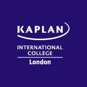

Education
Below is an overview of my academic background and the studies that have helped
me build my knowledge in computer science and artificial intelligence.
International School of Choueifat – Qatar (SABIS)
Primary, secondary, and high school education
2010 – 2024
I attended the International School of Choueifat in Qatar where I built
strong foundations in mathematics, science, and analytical thinking
through the SABIS educational system.
I studied a broad range of subjects including mathematics, computer science,
physics, chemistry, mechanics, economics, business studies,
English, and Arabic.

Kaplan International College London
Foundation Programme – Bachelor of Science pathway
2024 – 2025
I completed a foundation programme at Kaplan International College London
where I studied mathematics and information technology to prepare
for undergraduate study in computer science.
Queen Mary University of London
BSc Computer Science and Artificial Intelligence
2025 – Present
First-Year Modules
As a first-year student, some of the modules I am studying include
Computer Systems and Networks, Fundamentals of Web Technology,
Object-Oriented Programming, Logic and Discrete Structures,
Automata and Formal Languages, and Information System Analysis.
These modules have helped me develop a better understanding of
programming, computer systems, and the theoretical foundations
of computer science.